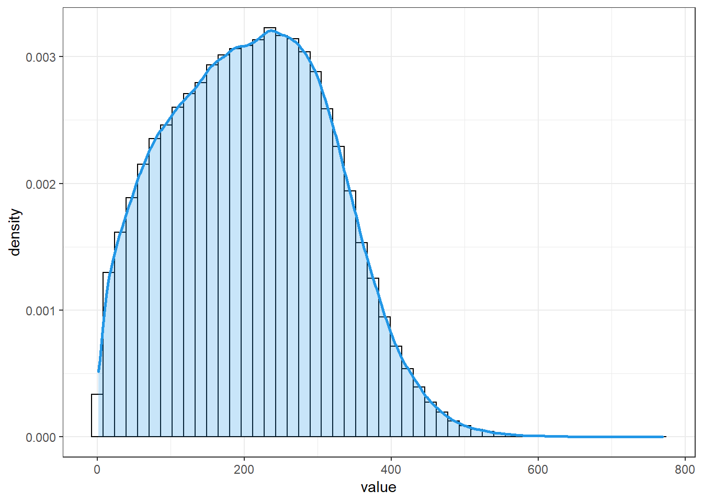
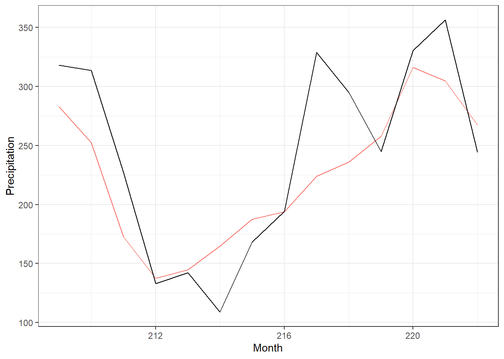
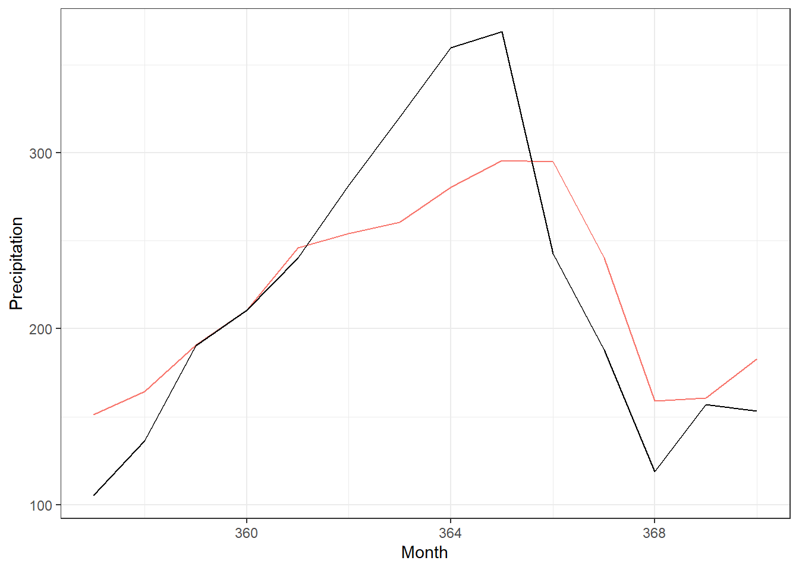

7 EDA precipitation
In this section we want study the time series of precipitation in the Central Amazon Basin. The CHIRPS data set contains the precipitation data, created from in-situ and satellite measurements (Funk et al. (2015)). It can be downloaded for example from here [https://www.chc.ucsb.edu/data/chirps]. It contains observations from 1981 to 2021. Data comes on a high resolution of 0.05 grid.
Time frame: 1980 to 2016
7.1 Overview
Below the area of the Central Amazon Basin that is object of our study.

Figure 7.1: Localisation of the area under study. The central amazon basin (CAB) spanning across 0,-10 latitude and -70,-55 longitude
7.2 Precipitation values raw
Firstly we inspect the precipitation values in general

Its form is a unimodal, right-skewed distribution.
The values range from r[1] tom r[2].
7.3 Mean at each location

Figure 7.2: Precipitation mean at each location. The mean was computed over the whole time period

Figure 7.3: Density of means, means were computed for each location over the whole time period
As we can see most locations have a mean precipitation of around 200 mm/month, over the whole time series. Regionally in the “upper left” corner of the Amazon Basin, mean precipitation is higher or equal to the mean. The reference point for “higher” is the mean of the location means. This region seems to be more or less spatially consistent. The rest of the region with lower mean precipitation has also some small areas where precipitation is again a little bit higher. For example in the upper right corner and on the bottom, right of the middle.
7.4 SD at each location
Figure 7.4: Precipitation standard deviation at each location. The standard deviation was computed over the whole time period
Figure 7.5: Density of standard deviations, standard deviations were computed for each location over the whole time period
For the standard deviation we also see regional patterns. These patterns overlap with the regions of the mean but their magnitude is flipped. Meaning, in the upper left where we observe larger mean values we generally observe lower standard deviation and in the lower and upper right corners, higher standard deviations.
Question: There are obviously regional differences in magnitude of mean and standard deviations. Should we therefore NOT normalise the time series, prior to clustering? Mean and SD contain information and the variables are all measured on the same scale. (Consideration: seasonality might play a role, meaning that the values of different months come a different distribution)
7.6 Trend at each location

Many regions dont have a trend and trends in general seem to be quite small. We can identify some regions with similar up or downward trends. We also computed plots for the deseasonalised data but it looked almost the same
Plot means and sd for each month respectively
7.7 Means per month TEST
 We see spatial patterns of the mean evolving over time. For example: From May until August there is a spatial separation in two parts that dissolves in september. As expected there is a large seasonal component regarding the means.